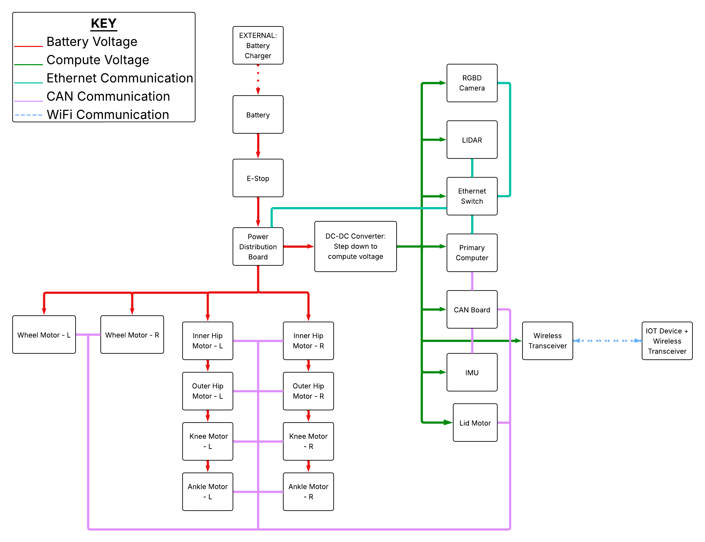
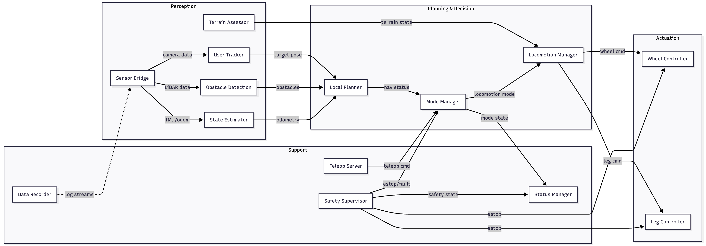
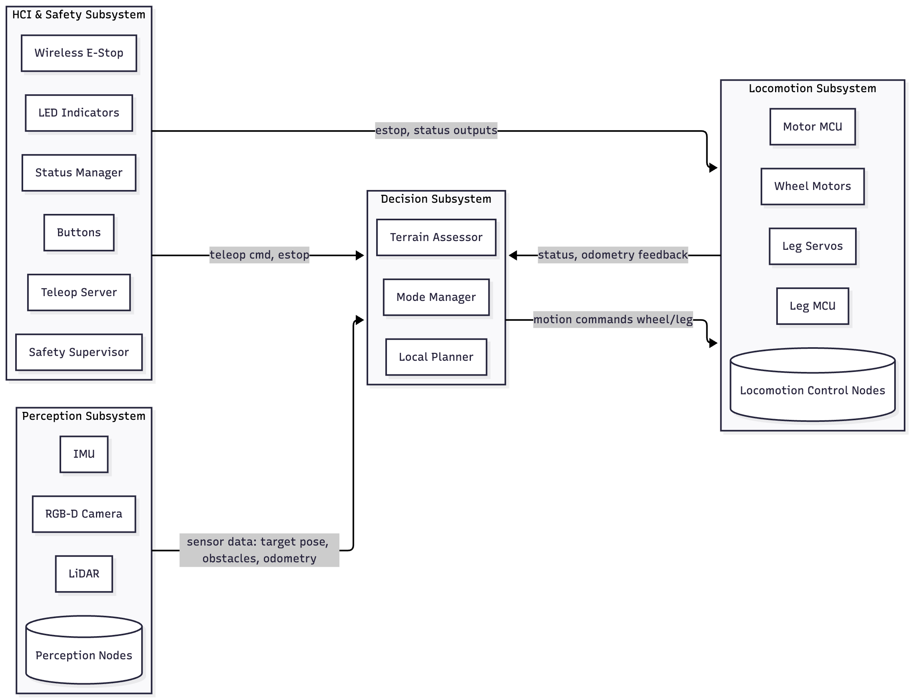

System Architecture
Hardware Architecture
To design a robust yet streamlined system, the electrical architecture limits voltage buses to two defined levels:
24 V supplied from the battery and distributed to motors via the power distribution board. Voltage set by motor power supply requirements.
A stepped-down voltage via DC-DC converter powers the onboard Jetson AGX Orin computer and sensors. Standard voltage matched to the computer's operating range.
Communication between hardware components is handled via Ethernet (sensor data) or CAN bus (motor commands and feedback), as determined by the communications trade study. This split matches bandwidth and latency requirements for each subsystem.

Mechanical/Electrical Hardware Architecture Diagram showing the 24 V battery bus, DC-DC conversion, power distribution, Ethernet sensor network, and CAN motor bus.
Software Architecture

ROS 2 Software Architecture Diagram. Modules communicate through standardized topics and services. Perception nodes feed planning nodes, which command actuation nodes. Safety and teleoperation modules operate as cross-cutting concerns.
The software architecture defines how perception, decision-making, and actuation modules interact to achieve autonomous following and terrain-adaptive locomotion. The design emphasizes modularity: perception nodes process raw sensor streams into target poses and environment maps; planning nodes generate motion commands and decide between wheeling or walking; actuation nodes execute low-level motor control. Support modules for tele-operation, safety, status feedback, and logging ensure robustness and user trust.
All compute-intensive nodes run on the Jetson AGX Orin (primary onboard computer):
Motor controllers (VESC) and servo drivers (RS04) operate as dedicated embedded controllers, connected via CAN bus and receiving commands from the Jetson.
Subsystem Architecture

Subsystem Architecture Diagram. Four functional blocks — Perception, Decision, Locomotion, and HCI & Safety — with labeled data flow arrows between them.
The subsystem architecture organizes the robot into four cohesive functional blocks. Each subsystem combines both hardware and software elements to deliver its function. Key interfaces: sensor data flows from Perception to Decision; motion commands flow from Decision to Locomotion; feedback on status and odometry flows back from Locomotion to Decision; user input and safety overrides flow from HCI & Safety to both Decision and Locomotion.
Fuses data from the RGB-D camera, LiDAR, and IMU. Generates target poses, obstacle maps, and odometry estimates for the Decision subsystem.
Satisfies R-7 User Following, R-5.2 Obstacle Avoidance, R-4.1 Indoor/Outdoor
Consumes perception output to assess terrain, plan reactive motion paths, and arbitrate between autonomous wheeled operation and tele-operated fallback.
Satisfies R-5 Terrain Traversal, R-6.1 Autonomous Operation, R-6.3 Speed Limits
Executes motion decisions through wheels and leg actuators, coordinated by embedded controllers that handle low-level drive commands.
Satisfies R-3 Carrying Capacity, R-5.1 Terrain Traversal, R-9.2 Maintainability
Provides the user interface, tele-operation capability, emergency stop functionality, and external status indicator outputs.
Satisfies R-1.1/R-1.2 E-Stop, R-1.3 Status Indicators, R-6.2 Tele-operation
Regulates and distributes electricity to all electronic components. Manages battery state and provides safe power sequencing.
Satisfies R-8.1 Operation Duration, R-8.2 Operation Range
Holds the user's payload in a secure, accessible compartment with a motorized linear sliding lid that locks electronically while the robot is in motion.
Satisfies R-3.1 Cargo Volume, R-5.4 Locking Enclosure, R-12.2 User Accessibility